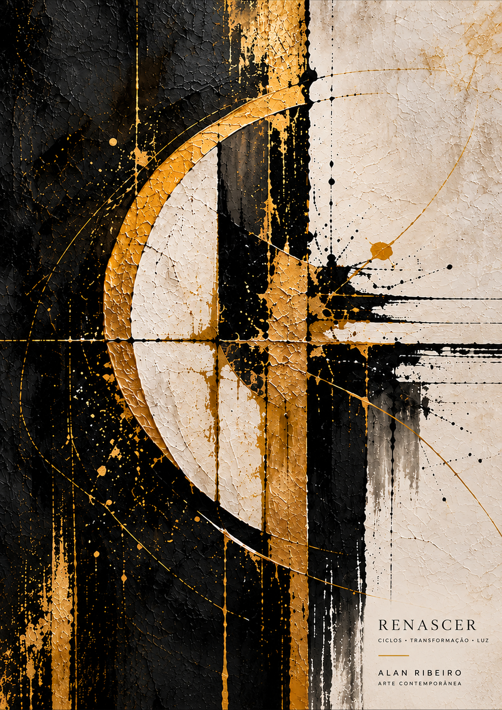
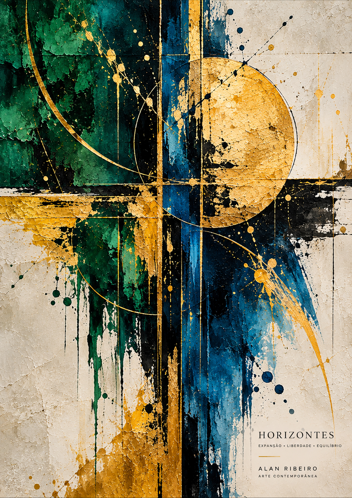

Coleção · Arte contemporânea digital
As sete obras
Sete composições de arte contemporânea digital criadas por Alan Ribeiro, que inspiraram os sete capítulos do romance. No livro, elas aparecem em sete páginas coloridas.
Conheça mais em: @literaturaeartedigital




